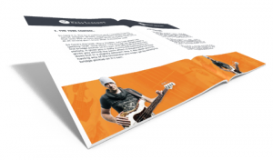
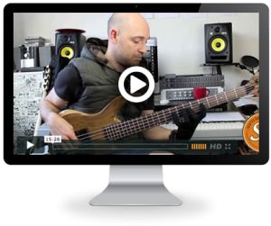

Get Your Free Bass Toolkit
- 'The Modes Revealed' - Mini Course
- How to Land Killer Gigs (wherever you are in the world!) - Video Tutorial
- The 3 things you must know when buying any bass - Video Tutorial
- The Backing Track Library - multiple awesome play-alongs.
- The 6 Secret Tools Scott Uses to Get A Great Bass Tone - ebook

I will never share your email address. I respect your privacy

Scott Devine's Top 6 Secret Tools For Getting A Great Bass Tone
Wondering how Scott Devine get’s such a great bass tone? All is revealed in this mini guide!
More Info Access NowGet the backing tracks for all of my tutorials
We have an ever expanding backing track library so you can jam along to many different styles of music and grooves – all for free!
More Info Access Now
The 3 things you must know when buying any bass
In this exclusive 25 minute video tutorial, Chris May the master luthier behind Overwater Basses comes into the Scott’s Bass Lessons headquarters to discuss the 3 things you must know when buying a bass.
More Info Access NowLearn how to build a great groove with "The Essential Bass Line Creation Guide"
In this free 30 minute in-depth video guide, Scott Devine demonstrates how focusing on the fundamentals is absolutely key!
More Info Access NowHow to land killer gigs (wherever you are in the world!)
In this exclusive free video tutorial discover Scott’s 3 top tips that have the potential to land you some killer gigs!
More Info Access Now

Get the Free 'The Modes Revealed' mini course and finally understand the modes!
Are you riddled with confusion when you hear people discussing “The Modes”…? If you are, then this mini free mini course is for you!
More Info Access NowGet Your Free Bass Toolkit
- 'The Modes Revealed' - Mini Course
- How to Land Killer Gigs (wherever you are in the world!) - Video Tutorial
- The 3 things you must know when buying any bass - Video Tutorial
- The Backing Track Library - multiple awesome play-alongs.
- The 6 Secret Tools Scott Uses to Get A Great Bass Tone - ebook
I will never share your email address. I respect your privacy